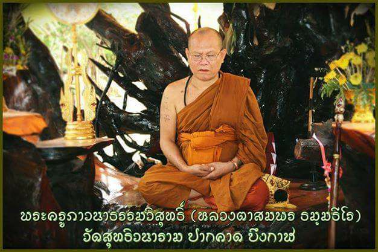
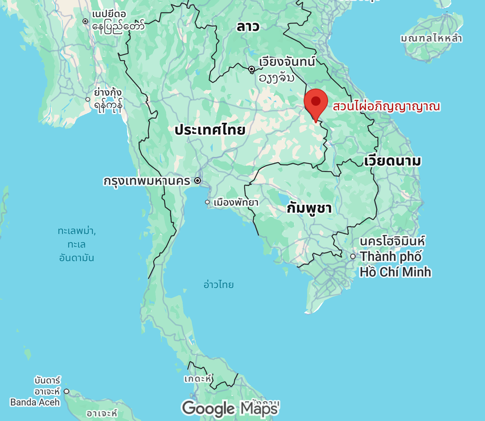

🙏 ประธานฝ่ายสงฆ์

พระครูภาวนาธรรมวิสุทธิ์ (หลวงตาสมพร ธมฺมธีโร)
เจ้าคณะอำเภอปากคาด, เจ้าอาวาสวัดสุทธิวนาราม, จังหวัดบึงกาฬ
🎬 ประจักษ์บารมีธรรม หลวงตาสมพร
พิธีบรรจุพระบรมสารีริกธาตุ ณ พระเกศสมเด็จองค์ปฐม
🎬 พิธีปลุกเสกพระพุทธมหาจักรพรรดิ
20 มิถุนายน 2569 | สวนไผ่อภิญญาญาณ จ.อุบลราชธานี
🎬 พิธีถวายพระประธานพระพุทธมหาจักรพรรดิ
15 สิงหาคม 2569 | สวนไผ่อภิญญาญาณ จ.อุบลราชธานี
🌿 ความเป็นมาและวัตถุประสงค์
สืบเนื่องจาก สวนไผ่อภิญญาญาณ ได้ดำเนินการพัฒนาพื้นที่และก่อสร้างศาลาปฏิบัติธรรมจนแล้วเสร็จสมบูรณ์ ตลอดจนได้รับความเมตตาจากคณะสงฆ์และพลังศรัทธาของสาธุชนทุกท่าน ในการร่วมสร้างองค์พระพุทธมหาจักรพรรดิประดิษฐานเป็นมิ่งขวัญศูนย์รวมจิตใจเป็นที่เรียบร้อย
เพื่อให้สถานปฏิบัติธรรมแห่งนี้มีความมั่นคง ถาวร และมีพื้นที่เพียงพอที่จะรองรับพระภิกษุสงฆ์ สามเณร ตลอดจนพุทธศาสนิกชนผู้ใฝ่ธรรมในการประพฤติปฏิบัติธรรม อบรมจิตตภาวนาในระยะยาว จึงจำเป็นต้องจัดหาทุนทรัพย์เพื่อ จัดซื้อที่ดินสำหรับจัดตั้งสำนักปฏิบัติธรรมอย่างเป็นทางการ
✨ อานิสงส์การถวายที่ดินเพื่อพระพุทธศาสนา
การถวายที่ดินจัดตั้งวัดหรือสำนักปฏิบัติธรรม ถือเป็นยอดแห่งทานบารมีฝ่ายวัตถุทาน เป็นการสร้างรากฐานอันมั่นคงให้พระพุทธศาสนาดำรงอยู่คู่แผ่นดิน ผู้ร่วมบุญย่อมได้อานิสงส์ให้ชีวิตมีความมั่นคงในฐานะ ครอบครัว และหน้าที่การงาน ปราศจากอุปสรรค เจริญงอกงามไพบูลย์ตราบเข้าสู่พระนิพพาน
📜 รายละเอียดโครงการจัดซื้อที่ดิน
ที่ดินแปลงจัดตั้งสำนักปฏิบัติธรรม สวนไผ่อภิญญาญาณ มีเนื้อที่รวม ๑๙ ไร่ ๑ งาน ๔๐ ตารางวา (พร้อมสิ่งปลูกสร้าง) มูลค่าจัดซื้อรวมทั้งสิ้น ๓,๐๐๐,๐๐๐ บาท
กำหนดแผนการระดมทุนแบ่งชำระ ๓ งวด (ไม่มีดอกเบี้ย):
- งวดปลายปี ๒๕๖๙ : ๖๐๐,๐๐๐ บาท (สมทบทุนผ่านกฐินสามัคคีครั้งนี้)
- งวดปลายปี ๒๕๗๐ : ๖๐๐,๐๐๐ บาท
- งวดปลายปี ๒๕๗๑ : ๖๐๐,๐๐๐ บาท (งวดสุดท้ายเพื่อโอนกรรมสิทธิ์)


📅 กำหนดการทอดกฐินสามัคคี
- วันจันทร์ที่ ๒๓ พฤศจิกายน ๒๕๖๙ (วันรวม)
๑๕.๐๐ น. ตั้งองค์กฐินสามัคคี | ๑๙.๐๐ น. เจริญพระพุทธมนต์สมโภชองค์กฐิน - วันอังคารที่ ๒๔ พฤศจิกายน ๒๕๖๙ (วันทอดถวาย)
๐๗.๓๐ น. ถวายภัตตาหารเช้า | ๐๙.๓๙ น. พิธีทอดถวายผ้ากฐินสามัคคี

🙏 ขออนุโมทนาบุญกับคณะเจ้าภาพ
ผู้ร่วมบุญสร้าง พระพุทธมหาจักรพรรดิ แล้วเสร็จ
และประกอบพิธีน้อมถวายแด่คณะสงฆ์ เมื่อวันที่ ๑๕ สิงหาคม พ.ศ. ๒๕๖๙
🌟 ประธานอุปถัมภ์
- กำลังโหลดรายชื่อ...
✨ รองประธานอุปถัมภ์
- กำลังโหลดรายชื่อ...
🪷 ประธาน
- กำลังโหลดรายชื่อ...
🌾 บัดนี้ ขอกราบเรียนเชิญทุกท่านร่วมต่อยอดบุญ
ขอกราบอาราธนาและเรียนเชิญคณะเจ้าภาพทุกสายบุญ ตลอดจนท่านสาธุชนผู้มีจิตศรัทธาทุกท่าน ร่วมต่อยอดมหากุศลสู่งาน ทอดกฐินสามัคคีเพื่อจัดซื้อที่ดินจัดตั้งสำนักปฏิบัติธรรม สวนไผ่อภิญญาญาณ ร่วมกันตามกำลังศรัทธา เพื่อสืบทอดอายุพระพุทธศาสนาให้มั่นคงสืบไป
ร่วมทำบุญสมทบทุนจัดซื้อที่ดินได้ที่
ธนาคารกสิกรไทย
เลขที่บัญชี: 226-8-24776-1
ชื่อบัญชี
สวนไผ่อภิญญาญาณโดย พระ วิเศษ ท่อนจันทร์
ช่องทางแจ้งความประสงค์:
Line ID
teamkus36สแกนเพิ่มเพื่อน
เรียน ท่านผู้มีจิตศรัทธาและกัลยาณมิตรทุกท่าน
ท่านสามารถร่วมทำบุญได้ตามกำลังศรัทธา ไม่มีการกำหนดเกณฑ์ขั้นต่ำแต่อย่างใด ทุกยอดปัจจัยล้วนเป็นมหากุศลอันยิ่งใหญ่ในการสร้างแผ่นดินธรรม
เมื่อโอนปัจจัยเรียบร้อยแล้ว ขอความกรุณาส่งหลักฐานพร้อมระบุ "ชื่อ-นามสกุล" ทาง Line ID เพื่อให้คณะทำงานบันทึกรวบรวมทำเนียบบุญและอนุโมทนาบุญสืบไป
ขออนุโมทนาบุญกับทุกท่านมา ณ โอกาสนี้
📸 ภาพบรรยากาศพิธีน้อมถวายพระพุทธมหาจักรพรรดิ
ภาพประวัติศาสตร์แห่งมหาบารมี ณ สวนไผ่อภิญญาญาณ (๑๕ สิงหาคม พ.ศ. ๒๕๖๙)